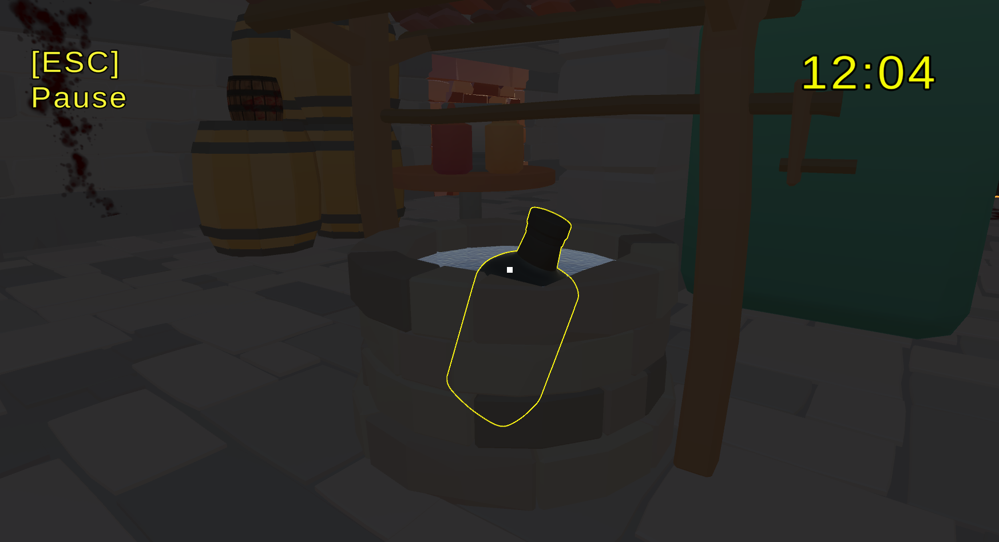
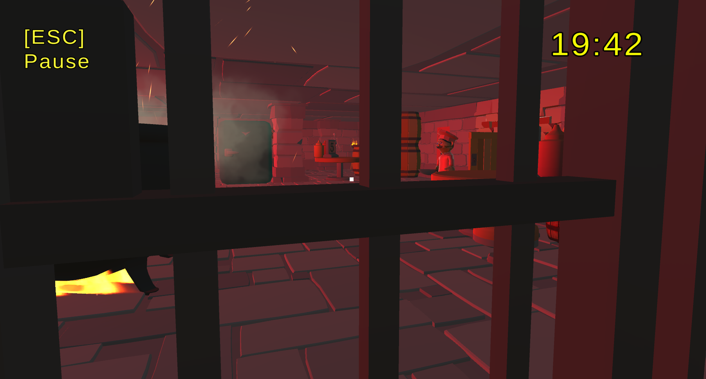
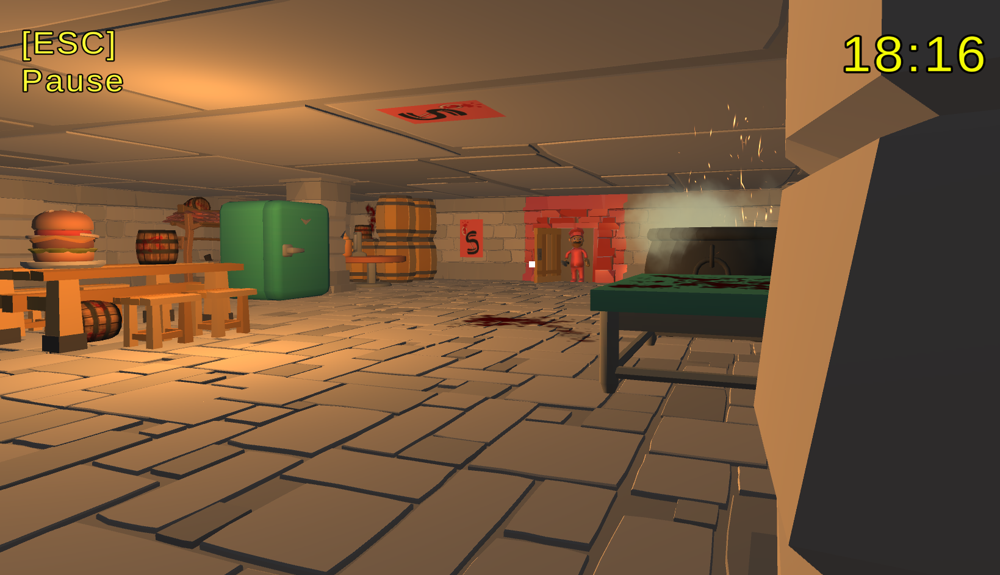
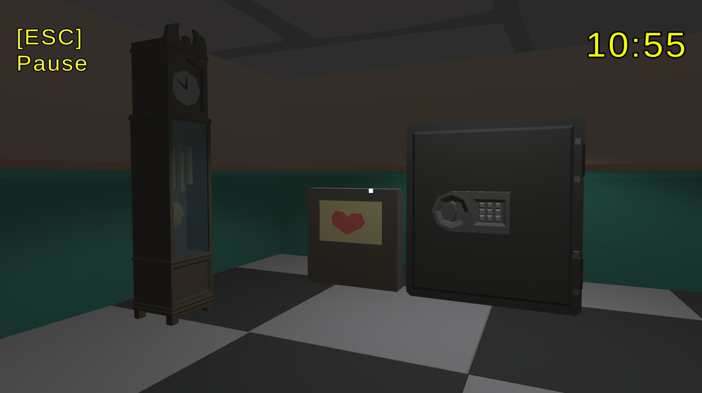

Unity • 3D Horror Puzzle
Dine & Dash Dungeon
After getting thrown in a dungeon for attempting to dine and dash, you plan to obtain the cash for your meal by breaking into a locked safe. However, be cautious... if caught by Chef Scarver, there will be deadly consequences!

About the Project
After a large meal at the local diner, Scarver's Scavengers, you decide to leave the restaurant without
paying (nice move, jerk). However, karma comes back to bite you when Chef Scarver captures you and
throws you in a prison in the restaurant's secret dungeon. The chef plans to kill and eat you if you
fail to pay for your meal within the given time. However, be cautious, as Scarver will occasionally
check in on you to ensure you have no plans to escape! Can you solve the puzzles in the dungeon to
obtain the cash you need to ultimately survive?
Content Notice: This game contains flashing lights and jumpscares!
Team: Dylan Abry (Lead Designer and Developer)
Gameplay & Media
"Dine & Dash Dungeon" Gameplay
Gameplay of Dine & Dash Dungeon that shows Chef Scraver's check-in system (and how to avoid being caught!), and interacting by reading clues and holding game objects.

Interactable Game Objects
Using Unity's Event System and a Raycast from the player, objects can be interacted with by being picked up and dropped in the game. This feature is essential in solving the game's three puzzle challenges!

Red Chef Check-in
On the red chef check-ins, the player must be inside the prison cell. Failure to be inside the cage for a red check-in results in game over.

Orange Chef Check-in
On the orange chef check-ins, the player can be outside of the prison cell, but must hide behind an object so they cannot be seen. Players will know if they're safe for orange check-ins if the heartbeat audio cannot be heard. Failure to successfully hide from the chef results in game over.

Safe Room
The room that contains the safe with the money to win the game! Players will unlock access to this room once they successfully solve the game's main puzzle without getting caught by Chef Scarver.
What I Built
- Randomized Chef Check-In System: Chef Scarver periodically checks on the player's table while they explore the restaurant, creating a time-based threat that interrupts the player's puzzle-solving and exploration. Repeating method calls are used to trigger these check-ins throughout gameplay using a randomly assigned float value that reassigns within a constant range after each call, introducing uncertainty into when the player can safely leave the table and interact with the environment. The warning light that appears prior to each check-in adjusts depending on which state is pulled from an Enum that holds the different types of check-ins the chef will do.
- Item Interactable System: A first-person interaction system uses raycasting from the player's camera to detect interactable objects within a defined reach distance. Valid objects are visually highlighted to communicate when they can be used, while interaction states control player movement, cursor access, and UI depending on the selected object. Certain interactions are also conditionally enabled based on previously completed objectives, allowing the same system to support progression-dependent puzzles and bonus content.
- String Input System: Solving the first puzzle requires text input from the player and validating their response against an expected solution. Submitted strings are normalized before comparison to make validation consistent, with separate audio and gameplay responses for correct and incorrect answers. Successful solutions update the puzzle's completion state and persist that progress, allowing later interactions to respond to objectives the player has already completed.
- Puzzle Progression & State Management: Puzzle completion states are tracked throughout the game and used to determine which interactions and objectives are currently available to the player. Completing certain challenges can unlock previously inaccessible interactables or bonus content, allowing environmental puzzles to build upon the player's previous actions rather than functioning as isolated events. Persistent completion data is also used where necessary to preserve progression between gameplay states.
Technical Challenges
- Safe Zone Implementation: The chef encounter system required specific areas of the restaurant to function as safe zones without disrupting the rest of the player's exploration. I used collision and trigger-based detection to track when the player entered or exited designated protected areas and incorporated that state into the chef's gameplay logic. This required keeping the player's physical location synchronized with the current encounter state so that check-ins could correctly distinguish between vulnerable and protected positions without creating false detections.
- Interactable State Management: The restaurant contains multiple interactable objects whose availability changes as the player completes puzzles and progresses through the game. I developed a first-person interaction system that raycasts from the player's camera, validates whether the targeted object is currently interactable, and provides visual feedback for valid targets. Entering an interaction also required coordinating several states at once, including disabling player movement, unlocking the cursor, displaying the appropriate UI, and restoring normal player control when the interaction ended. Progression flags were used to prevent gated interactions from becoming available before their required conditions were completed.
- Repeating Chef Check-In System: The chef needed to periodically interrupt exploration and check whether the player was in a valid hiding position, creating a recurring threat without requiring the event to be manually triggered. I implemented the system using an InvokeRepeating() method call that initiated check-ins throughout gameplay and evaluated the player's current state when each check occurs. The challenge was coordinating this recurring logic with exploration, safe-zone detection, and other gameplay states so that a check-in only produced the intended consequence under valid conditions and did not interfere with unrelated interactions or puzzle sequences.